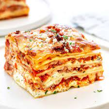

Lasagna

Description
Amazing lasagna recipe made with parmesan ricotta cheese filling, melted mozzarella cheese, lasagna noodles, and a tomato meat sauce.
Ingredients
- 1 tablespoon olive oil
- 1 small onion
- 1 lb. lean ground beef
- ¾ teaspoon garlic powder
- ¾ teaspoon salt
- ½ teaspoon pepper
- 32-40 ounce jar marinara sauce
- 2 cups whole milk ricotta cheese
- 1 cup grated parmesan cheese
- 1 large egg
- 1 teaspoon dried basil
- ¾ teaspoon salt
- ½ teaspoon pepper
- 12 lasagna noodles
- 4 cups mozzarella cheese
Steps
- Make the meat sauce by sautéing an onion in olive oil until it begins to soften. Then brown the ground beef until it is browned and the onion is softened. Stir in the marinara sauce and let it simmer on low.
- Make a parmesan ricotta cheese mixture.
- Use your favorite lasagna noodles.
- Bring on the cheese!
- Bake covered for 15 minutes and then remove the foil and continue to cook until the cheese is bubbly. Let it set up for 10 minutes before serving.